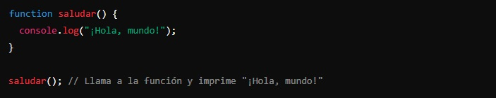
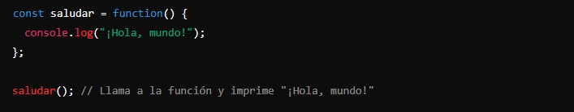

La principal diferencia entre una declaración de función y una expresión de función en JavaScript es cómo y cuándo puedes usar la función en tu código. Las declaraciones de función se elevan y pueden ser llamadas en cualquier parte del código, mientras que las expresiones de función no se elevan y deben ser definidas antes de ser llamadas.
-
Una declaración de función es una forma de definir una función con un nombre específico. Se puede llamar a esta función en cualquier parte del código, incluso antes de la línea donde se define, debido a un comportamiento de JavaScript llamado hoisting (elevación).
En este ejemplo, hemos creado la declaración y la hemos llamado saludar:
function saludar() { ... }
Ahora podemos llamar a la función saludar() en cualquier parte del código.
-
Una expresión de función implica definir una función que puede ser anónima y asignarla a una variable. A diferencia de las declaraciones de función, las expresiones de función no se elevan, lo que significa que no puedes llamarlas antes de la línea donde se definen.
En este otro ejemplo, hemos creado una variable llamada saludar y hemos definido la función sin nombre y se la hemos asignado a la variable:
const saludar = function() { ... }
Puedes llamar a saludar() solo después de la línea donde se define.